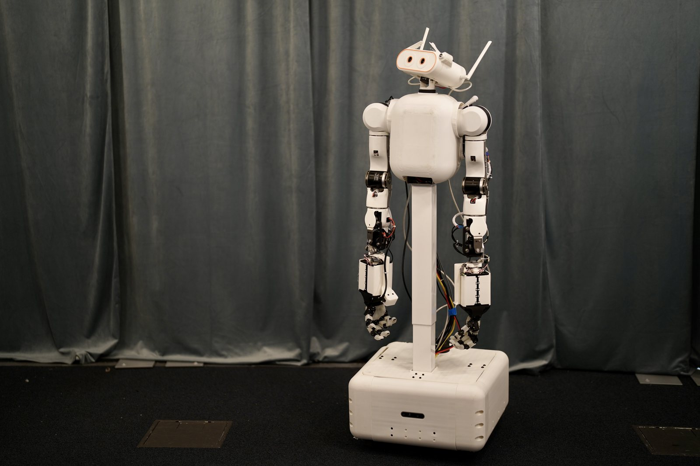

A whole-body robot you can actually build.
Capable mobile bimanual robots are proprietary; open ones are fixed-base with parallel-jaw grippers. MABEL is neither: 56 functional DOF — holonomic base, 0.635 m lift, actuated torso, active head, two 7-DOF arms, two 17-DOF hands — built for $9,670 with no machine shop, MIT-licensed end to end. One consumer headset is visualizer, controller, and demonstration recorder at once.

v1.0 · as built · no renders
Cheap, dexterous, whole-body
$9,670 as built. Two 17-DOF hands, two 7-DOF arms, a 3-DOF active head, and a holonomic swerve base — a 0–2.23 m fingertip band on a 0.49 m footprint. The only open platform that is holonomic, hand-dexterous, and neck-articulated under $10k.
Modular by construction
Every subsystem is its own project on its own bus — swap an arm, a hand, the base, or the head without touching the rest. Extrusion + sheet metal; no machine shop; MIT-licensed CAD, firmware, and software.
Simulation-complete
A MuJoCo twin runs the production control code unmodified at 500 Hz across 35 released
environments. Same URDF, same ROS 2 interface — use_sim:=true is the only difference.
One integrated system
Teleop (Vision Pro, iPhone, browser), electronics and firmware, data collection, and training are one stack: every command passes one wire protocol and one whole-body QP — and every session is a training demonstration.